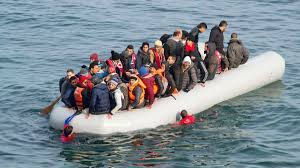

My Journey – From Afghanistan to Germany
Afghanistan — a country torn by war for over 40 years. I was born and raised there, spending the first nine years of my life surrounded by both beauty and hardship. I completed primary school, and even at that young age, I realized something important about myself: I learned quickly. Faster than many of my classmates. It gave me confidence, but it also made me curious — I wanted to know more, understand more, and push myself further.
As the war grew worse, daily life became more dangerous. My family faced a difficult decision — stay and risk everything, or leave behind the home we knew to search for safety and opportunity. In september 2015 we chose to leave. The journey to Europe, and eventually Germany, was long, exhausting, and filled with uncertainty. For months we traveled, crossing borders, facing setbacks, and holding on to the hope of a better future.
When we finally reached Germany, the real challenge began. I was in a completely new environment — I didn’t speak the language, I didn’t have friends, and everything felt unfamiliar. The first months were some of the hardest of my life. Every day was a lesson in adaptation: learning German, understanding a new culture, and finding my place in a world so different from the one I left behind.
Slowly, I made progress. I learned the language, I built friendships, and I focused on my education. The same determination that pushed me through the journey from Afghanistan helped me succeed here. I discovered new interests and passions, eventually leading me to study computer science.
Today, I am proud of how far I have come — not because the road was easy, but because it was hard. The challenges taught me resilience, patience, and the importance of character. They also reminded me that success isn’t just about talent or skill — it’s about discipline, respect, and the willingness to keep moving forward, no matter how steep the climb.
My journey is still ongoing, but everything I do is shaped by where I came from and what I have overcome. From Afghanistan to Germany, from uncertainty to ambition — this is my story, and it’s only the beginning.